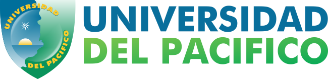

Este proyecto busca caracterizar el acceso, uso y apropiación de las TICs por estudiantes de bachillerato y media vocacional en el Litoral Pacífico.
información El objetivo es analizar cómo los estudiantes de la región acceden, usan y se apropian de las TICs, para entender las brechas digitales y proponer soluciones.
informaciónSe emplearon diversas técnicas de recolección de datos, incluyendo encuestas y entrevistas en múltiples instituciones.
informaciónInstituciones Evaluadas
Encuestas Aplicadas
Ciclos de Recolección
Contacto: Grupo GI2T
Email: gi2t@unipacifico.edu.co